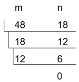

问题描述
有三个正整数a,b,c（0<a,b,c<10^6），其中c不等于b。若a和c的最大公约数为b，现已知a和b，求满足条件的最小的c。
输入数据
第一行输入一个n，表示有n组测试数据，接下来的n行，每行输入两个正整数a,b。
输出格式
输出对应的c，每组测试数据占一行。
输入样例
2
6 2
12 4
输出样例
4
8
利用转辗相除法求两个整数的最大公约数。例如，求整数m=48，n=18两个数的最大公约数的方法如左图所示。

具体做法是：，若m%n==0，则n是最大公约数，否则，计算 r=m%n，置m=n，n=r，重复这个过程，直到m%n==0。
将求整数m和n的最大公约数定义为函数
int gcd(int m,intn)； 。
在本题中，由于b是a、c的最大公约数，且c！=b，所以对c=2*b、3*b…进行穷举判断即可直到最小的满足条件的c。
#include <stdio.h>
int gcd(int m, int n)
{
int r;
while(m%n!=0)
{
r=m%n;
m = n;
n = r;
}
return n;
}
int main()
{
int t,a,b,c;
scanf("%d",&t);
while(t--)
{
scanf("%d%d",&a,&b);
c=2*b;
while(gcd(a,c)!=b)
c+=b;
printf("%d\n",c);
}
return 0;
}
本题选自杭州电子科技大学OJ题库 （http://acm.hdu.edu.cn/showproblem.php?pid=1014）
Problem Description
Computer simulations often require random numbers. One way to generate pseudo-random numbers is via a function of the form
seed(x+1) = [seed(x) + STEP] % MOD
where '%' is the modulus operator.
Such a function will generate pseudo-random numbers (seed) between 0 and MOD-1. One problem with functions of this form is that they will always generate the same pattern over and over. In order to minimize this effect, selecting the STEP and MOD values carefully can result in a uniform distribution of all values between (and including) 0 and MOD-1.
For example, if STEP = 3 and MOD = 5, the function will generate the series of pseudo-random numbers 0, 3, 1, 4, 2 in a repeating cycle. In this example, all of the numbers between and including 0 and MOD-1 will be generated every MOD iterations of the function. Note that by the nature of the function to generate the same seed(x+1) every time seed(x) occurs means that if a function will generate all the numbers between 0 and MOD-1, it will generate pseudo-random numbers uniformly with every MOD iterations.
If STEP = 15 and MOD = 20, the function generates the series 0, 15, 10, 5 (or any other repeating series if the initial seed is other than 0). This is a poor selection of STEP and MOD because no initial seed will generate all of the numbers from 0 and MOD-1.
Your program will determine if choices of STEP and MOD will generate a uniform distribution of pseudo-random numbers.
Input
Each line of input will contain a pair of integers for STEP and MOD in that order (1 <= STEP, MOD <= 100000).
Output
For each line of input, your program should print the STEP value right- justified in columns 1 through 10, the MOD value right-justified in columns 11 through 20 and either "Good Choice" or "Bad Choice" left-justified starting in column 25. The "Good Choice" message should be printed when the selection of STEP and MOD will generate all the numbers between and including 0 and MOD-1 when MOD numbers are generated. Otherwise, your program should print the message "Bad Choice". After each output test set, your program should print exactly one blank line.
Sample Input
3 5
15 20
63923 99999
Sample Output
3 5 Good Choice
15 20 Bad Choice
63923 99999 Good Choice
（1）编程思路。
题目的意思是：输入两个整数x和y，若x与y互质，则输出“Good Choice”;否则输出“Bad Choice”。
若两个整数x和y的最大公约数为1，则x与y互质。
（2）源程序。
#include <stdio.h>
int gcd(int a, int b)
{
int r;
while(a%b!=0)
{
r=a%b;
a = b;
b = r;
}
return b;
}
int main()
{
int x, y;
while(scanf("%d %d", &x, &y) != EOF)
{
if(gcd(x, y) == 1)
printf("%10d%10d Good Choice\n\n", x, y);
else
printf("%10d%10d Bad Choice\n\n",x, y);
}
return 0;
}
本题选自北大POJ题库 （http://poj.org/problem?id=3970）
Description
The CEO of ACM (Association of Cryptographic Mavericks) organization has invited all of his teams to the annual all-hands meeting, being a very disciplined person, the CEO decided to give a money award to the first team that shows up to the meeting.
The CEO knows the number of employees in each of his teams and wants to determine X the least amount of money he should bring so that he awards the first team to show up such that all team members receive the same amount of money. You must write a program to help the CEO achieve this task.
Input
The input consists of multiple test cases, each test case is described on a line by itself, Each line starts with an integer N (1 <= N <= 20) the number of teams in the organization followed by N space separated positive integers representing the number of employees in each of the N teams. You may assume that X will always fit in a 32 bit signed integer. The last line of input starts with 0 and shouldn't be processed.
Output
For each test case in the input print "The CEO must bring X pounds.", where X is as described above or "Too much money to pay!" if X is 1000000 or more.
Sample Input
1 3000000
2 12 4
0
Sample Output
Too much money to pay!
The CEO must bring 12 pounds.
（1）编程思路。
题意是求输入的n个正整数的最小公倍数。设正整数x与y的最大公约数为gcd(x,y)，则x与y的最小公倍数为x*y/gcd(x,y)。
（2）源程序。
#include <stdio.h>
int lcm(int x,int y)
{
int r,a,b;
a=x; b=y;
while (a%b!=0)
{
r=a%b;
a=b;
b=r;
}
return x*y/b;
}
int main()
{
int n,i,x0,x1;
while(scanf("%d",&n) && n!=0)
{
scanf("%d",&x0);
for (i=2;i<=n;i++)
{
scanf("%d",&x1);
x0=lcm(x0,x1);
}
if (x0>=1000000)
printf("Too much money to pay!\n");
else
printf("The CEO must bring %d pounds.\n",x0);
}
return 0;
}
题目描述
已知两颗卫星的运行周期，求它们的相遇周期。
输入
输入数据的第一行为一个正整数T，表示测试数据的组数，然后是T组测试数据，每组测试数据包含两组正整数，用空格隔开。每组包含两个正整数，表示转n圈需要的天数(26501/6335，表示转26501圈要6335天)，用'/'隔开。
输出
对于每组测试数据, 输出它们的相遇周期，如果相遇周期是整数则用整数表示，否则用最简分数表示。
输入样例
2
26501/6335 18468/42
29359/11479 15725/19170
输出样例
81570078/7
5431415
（1）编程思路。
输入的每个分数就是一个卫星的周期。求两个卫星的相遇周期，即求二者周期的最小公倍数。可以先把两个分数通分，找出通分后两个分子的最小公倍数，再除以通分后的分母，即得相遇周期（最小公倍数）。
（2）源程序。
#include <stdio.h>
long long gcd(long long m, long long n)
{
long long r;
while(m%n!=0)
{
r=m%n;
m = n;
n = r;
}
return n;
}
int main()
{
int t;
long long a,b,c,d,e,f,n,m,k;
scanf("%d",&t);
while(t--)
{
scanf("%lld/%lld%lld/%lld",&a,&b,&c,&d);
e=b*c;
f=a*d;
m=b*d; //通分
n=gcd(f,e);
n=f/n*e;
if(n%m==0) //能除整
printf("%lld\n",n/m);
else //不能整除,要化简后，输出分数
{
k=gcd(m,n); //求分子分母最大公约数
printf("%lld/%lld\n",n/k,m/k);
}
}
return 0;
}